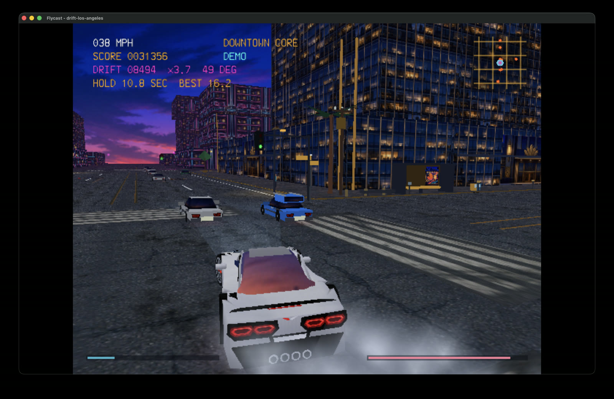

SEGA DREAMCAST HOMEBREW · FLYCAST WASM
DRIFT LOS ANGELES

Dreamcast-ohjelma · selainyhteensopiva ELF
Moottori on vielä kylmä — anna sen lämmetä hetki ennen lähtöä.
Tekniset tiedot, tekijät ja lisenssit
Toteutus
Tämä on Rich Stokesin alkuperäinen avoimen lähdekoodin Dreamcast-homebrew, ei JavaScript-uudelleentoteutus. Muuttamattomasta pelilähdekoodista rakennettu selainyhteensopiva ELF suoritetaan Flycast WASM -ytimellä. Peli renderöi Dreamcastin täydellä 640 × 480 -resoluutiolla ja kuva skaalautuu suureksi selainikkunaan ilman Dreamcast BIOSia. ELF ja emulaattoriydin ovat erillisiä staattisia resursseja, jotka ladataan vasta käynnistyspainalluksen jälkeen.
Peli ei käytä VMU-tallennuksia, joten pysyvää palvelintallennusta ei tarvita. Pelin, lähdekoodin, julkaisujen ja tekijän tiedot löytyvät virallisesta projektista.
Tekijät ja lisenssit
- Peli ja alkuperäiset assetit: Rich Stokes / Dreamcast Homebrew, MIT.
- Flycast WASM -ydin: Flycast-tiimi ja Nick Somers, GPLv2.
- Selainkäyttöliittymä: EmulatorJS. ZIP-purku: fflate 0.8.2, MIT.
- KallistiOS: KallistiOS Contributors, KOS-lisenssi (uusi BSD).
- Moottorin joutokäynti: “Eight-cylinder engine idling.wav”, Lumamorph, CC BY 4.0.
- Moottorin kierrokset: “Hot-Rod-V-8-BigSpchg-RoughIdle-RevUps-IdleDR025-30sec.wav”, Ears68, CC BY 3.0.
- Renkaat: “Distant car tire screetch”, Sadiquecat, CC0.
- Musiikki: “Pure Raceway”, MintoDog, CC0.